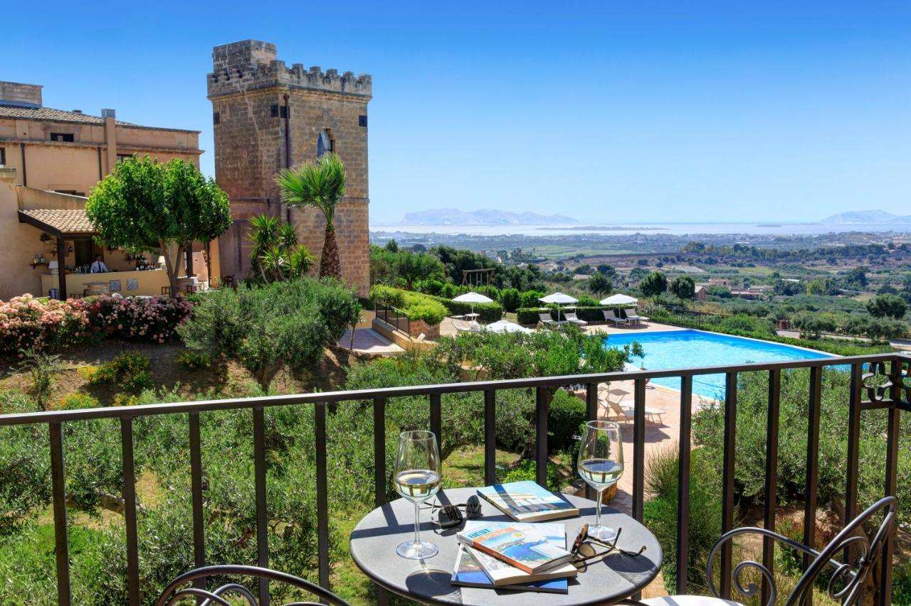
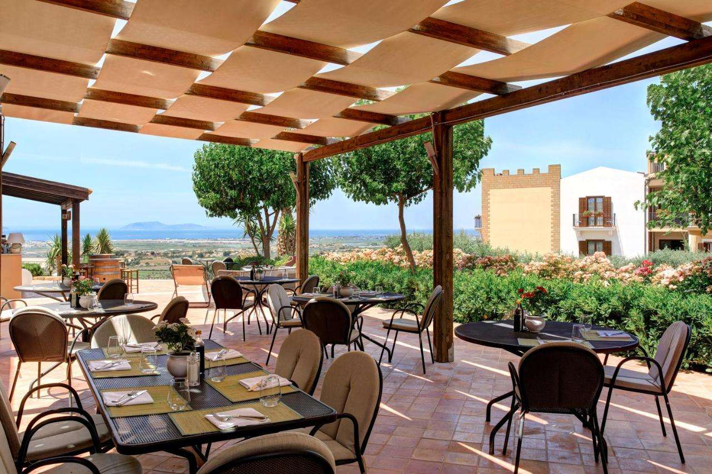
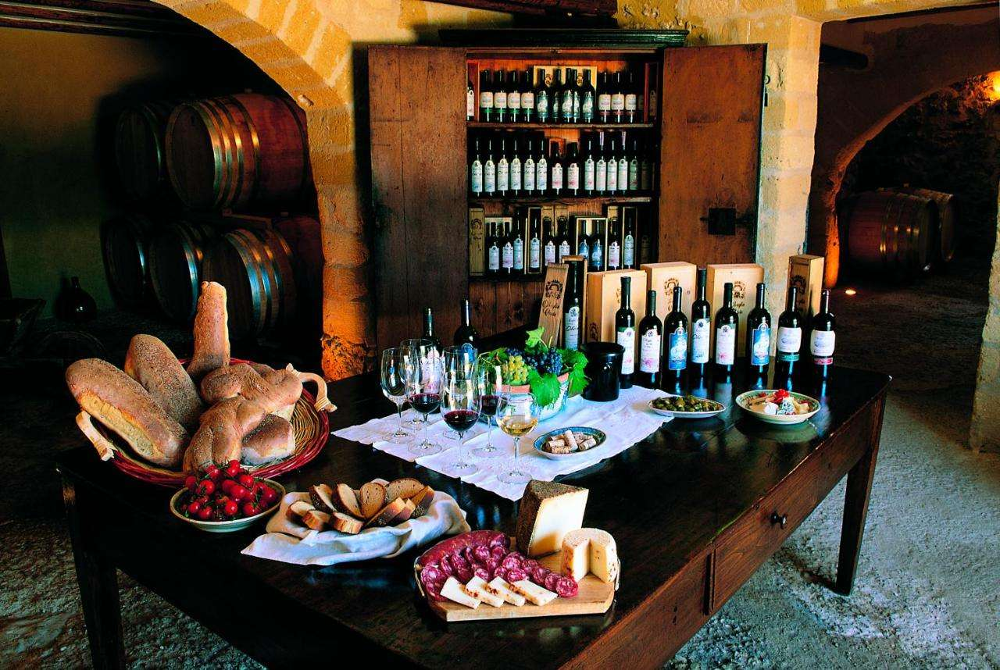

Eco_Hotel_Pomelia
Non volevamo rinunciare alla tradizione alberghiera di famiglia, attiva da 3 generazioni, così come all'innovazione necessaria per ridurre
l'impatto sull'ambiente. Abbiamo deciso di ristrutturare l'hotel rendendolo l'ecostruttura che è oggi. Da sempre, Hotel Pomelia, è un punto di
riferimento per il turismo ragusano, abbracciando un rinnovamento in armonia con la natura e le tradizioni del luogo. Pomelia è il primo
Hotel in Sicilia ad aver scelto di diventare Società Benefit.
Tutto l'Hotel Pomelia è alimentata da energia rinnovabile. Le camere, sono dotate di arredamenti ricavati da materiali di recupero,
rielaborati da artigiani e artisti della zona. La biancheria dell'intera struttura, è stata sostituita con tessuti in cotone
GOTS e canapa. La biancheria non più utilizzata, è stata donata a una Onlus della zona, che ha provveduto a distribuirla a famiglie in necessità.
L'hotel include un servizio colazione, mezza pensione o di pensione completa a seconda del tipo di pernottamento scelto. I piatti serviti nel ristorante,
sono tutti a km 0, in parte provenienti direttamente dall'orto biologico. Tutti gli altri ingredienti, provengono da produttori locali.

>Una spiaggia attrezzata, senza barriere architettoniche e accessibile.
>Su richiesta, è possibile organizzare una visita guidata della zona con una guida turistica locale o trekking con una guida escursionistica.
>Sempre su prenotazione, si organizzano workshop sulla cucina siciliana e sulla permacultura delle coltivazioni.
 